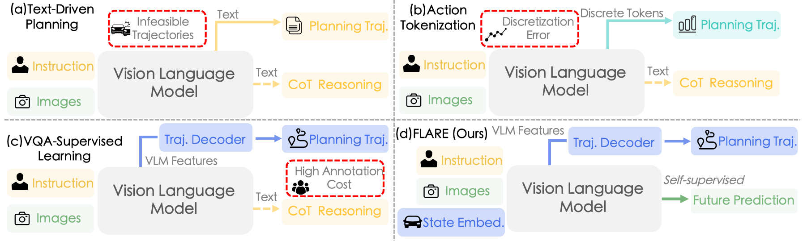
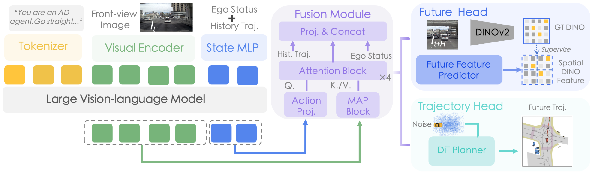
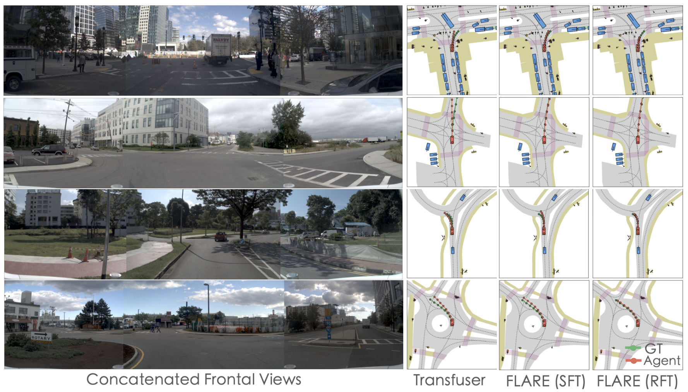

FLARE: Learning Future-Aware Latent Representations from Vision-Language Models for Autonomous Driving
1. 论文速览与证据链
一句话贡献
FLARE 以自监督未来 feature prediction 取代驾驶 VQA/文本监督，让 Qwen-VL 在 latent space 预测场景动态与 ego-motion，并通过 GRPO 改善 NAVSIM 轨迹决策。
元数据与阅读定位
| 技术类型 | Future-aware latent driving representation |
|---|---|
| 关键词 | FLARE、future-aware representation、self-supervised prediction、Qwen-VL、GRPO、NAVSIM v1/v2、vision-only planning |
| 开源情况 | 论文公开；代码与 NAVSIM 训练配置以作者发布为准 |
| 适合程度 | 很高：不用文本 CoT，以未来特征预测激活 VLM 的视觉语义并结合 GRPO 规划 |
从哪里开始读
当前多视角图像经 VLM 编码，future-aware module 预测后续帧在视觉语义空间的特征；训练时用未来特征作为自监督 target，并加入轨迹规划目标。SFT 后以 group-relative reward 对候选轨迹排序，直接优化 PDMS/安全相关决策。 阅读时先确认中间表示是否在部署端运行，再用主结果和消融判断它究竟改善了感知、动态预测还是动作生成。
图表证据链
| # | 原始图 | 支持的主张与边界 |
|---|---|---|
| 1 | 文本 VLA 与 latent 路线比较 | 图中把语言监督、文本 reasoning 和 future latent prediction 并列，说明 FLARE 试图绕开离散语言瓶颈。 |
| 2 | FLARE 训练流程 | 当前视觉、未来 feature target、轨迹监督和 GRPO 组成两阶段训练，未来只在训练端提供监督。 |
| 3 | NAVSIM 定性规划 | 多场景轨迹展示模型对前车、道路边界和动态体的处理；图能说明行为差异，但不能单独量化安全。 |
2. 问题与动机
问题定义
驾驶 VLA 常依赖昂贵 VQA/CoT 标注，离散语言又与连续轨迹存在模态错配。FLARE 试图直接利用 VLM 的视觉语义先验：不生成解释文本，而是预测未来 latent feature，使表征对场景演化和 ego-motion 敏感。
现有路线为何不足
文本 CoT 提供可解释性却带来 hallucination 与解码延迟；纯端到端轨迹模型缺少大模型先验。FLARE 位于两者之间，用 predictive self-supervision 激活 VLM，再以 SFT/GRPO 训练 planner，保持 vision-only 输入。
作者的解题假设
FLARE 以自监督未来 feature prediction 取代驾驶 VQA/文本监督，让 Qwen-VL 在 latent space 预测场景动态与 ego-motion，并通过 GRPO 改善 NAVSIM 轨迹决策。 该假设只有在统一骨干、数据和评测下仍带来增益时才成立。
4. 方法、表示与训练
端到端信息流
当前多视角图像经 VLM 编码，future-aware module 预测后续帧在视觉语义空间的特征；训练时用未来特征作为自监督 target，并加入轨迹规划目标。SFT 后以 group-relative reward 对候选轨迹排序，直接优化 PDMS/安全相关决策。
核心表示
预测对象不是 RGB，也不是文本 rationale，而是 VLM latent feature；这减少像素冗余并避免语言瓶颈。表示同时编码静态道路结构、动态交通体和 ego-motion，供 trajectory decoder 使用。
训练阶段与目标
主要使用 NAVSIM 标准 85k 场景及 navtrain trajectory 数据，不依赖额外驾驶预训练即可比较。FLARE-4B 以 QwenVL3-4B 为基线，先做 future-aware SFT，再用 GRPO/RFT 细化规划质量。
推理与部署路径
推理时只输入当前/历史视觉并输出轨迹，不需要真实未来或文本 CoT。future-aware 模块作为 latent predictor 提供规划条件；相比生成长文本，延迟更受视觉 backbone 和轨迹采样影响。
文本 VLA 与 latent 路线比较

FLARE 训练流程

5. 实验、结果与消融
数据集、任务与协议
NAVSIM v1 使用 PDMS，v2 使用扩展 EPDMS，并细分 no-collision、drivable area、TTC、comfort、progress、traffic-light/lane/comfort 等。论文同时报告 SFT 与 RFT，以同规模 QwenVL3-4B 和带外部数据的方法对照。
主要定量结果
在 NAVSIM v1 SFT 中 FLARE-4B 达 PDMS 86.9，略高于 ReCogDrive-8B 的 86.8，并比同数据 QwenVL3-4B 的 80.8 提升 6.1。该比较说明 future latent objective 有效，但不同方法的数据与 RFT 设置仍需分层解读。
消融与因果解释
消融围绕 future prediction、VLM 初始化与 GRPO 展开：去掉未来特征目标会削弱规划，RFT 进一步改善决策质量。定性图展示轨迹在复杂交通体附近更符合未来运动；仍缺少大规模真实闭环和长尾 failure taxonomy。
证据没有覆盖什么
从当前评测覆盖看，NAVSIM 属于规划导向的非真实车闭环，PDMS 提升不等价于道路部署安全；未来 feature 可能吸收数据集偏差，且 latent 缺少直接可解释性。GRPO 奖励设计也可能针对 benchmark 过拟合。
NAVSIM 定性规划

6. 复现路径与工程风险
最小可行复现
复现可从 NAVSIM 开始，固定 QwenVL3-4B 与 trajectory decoder，构造未来视觉 feature target，先验证 80.8→86.9 趋势，再加入 GRPO。关键风险是 future target 对齐、多相机时间同步、奖励复现和大 VLM 显存。
验收标准
在 NAVSIM v1 SFT 中 FLARE-4B 达 PDMS 86.9，略高于 ReCogDrive-8B 的 86.8，并比同数据 QwenVL3-4B 的 80.8 提升 6.1。该比较说明 future latent objective 有效，但不同方法的数据与 RFT 设置仍需分层解读。 复现时至少应恢复相同方向的增益，并报告同一随机种子、数据规模和延迟预算。
复现风险清单
| 环节 | 具体风险 |
|---|---|
| 数据 | 需取得论文列出的训练数据、相同切分与时间同步；未公开数据必须单列。 |
| 模型 | 需固定视觉/VLM 骨干、tokenizer 与动作头，避免把模型规模差异误判为方法收益。 |
| 训练 | 按论文阶段顺序复现，并保留无 latent/world objective 的严格对照。 |
| 评测 | 同时复现主指标、消融和失败类型；开环结果不能替代闭环安全。 |
| 硬件 | 复现可从 NAVSIM 开始，固定 QwenVL3-4B 与 trajectory decoder，构造未来视觉 feature target，先验证 80.8→86.9 趋势，再加入 GRPO。关键风险是 future target 对齐、多相机时间同步、奖励复现和大 VLM 显存。 |
7. 分析、局限与边界
最有价值的贡献
综合方法与实验证据，FLARE 以自监督未来 feature prediction 取代驾驶 VQA/文本监督，让 Qwen-VL 在 latent space 预测场景动态与 ego-motion，并通过 GRPO 改善 NAVSIM 轨迹决策。
作者结论的适用边界
将结论外推前需要保留以下边界：NAVSIM 属于规划导向的非真实车闭环，PDMS 提升不等价于道路部署安全；未来 feature 可能吸收数据集偏差，且 latent 缺少直接可解释性。GRPO 奖励设计也可能针对 benchmark 过拟合。
可信的后续实验
可把 FLARE 与 dynamics tokenizer 结合：先预测紧凑 ego/environment token，再用 feature consistency 和 closed-loop reward 联合训练；需要单独评估 latency、calibration 与错误未来对 safety shield 的影响。
8. 组会问答与阅读结论
Q1. 为什么不用文本 CoT？
A：语言标注昂贵且与连续轨迹错配，未来 latent 更直接描述场景演化。
Q2. future target 是什么？
A：未来帧在 VLM 视觉语义空间的特征，不是 RGB 视频。
Q3. 主要提升？
A：同数据 QwenVL3-4B PDMS 80.8，FLARE-4B 为 86.9。
Q4. GRPO 起什么作用？
A：对候选规划按相对奖励优化，使未来表征进一步转化为轨迹质量。
Q5. 最大证据缺口？
A：缺少真实道路闭环、延迟和 failure calibration 评估。
我的阅读笔记
结合本批论文的比较，我的后续关注点是：可把 FLARE 与 dynamics tokenizer 结合：先预测紧凑 ego/environment token，再用 feature consistency 和 closed-loop reward 联合训练；需要单独评估 latency、calibration 与错误未来对 safety shield 的影响。